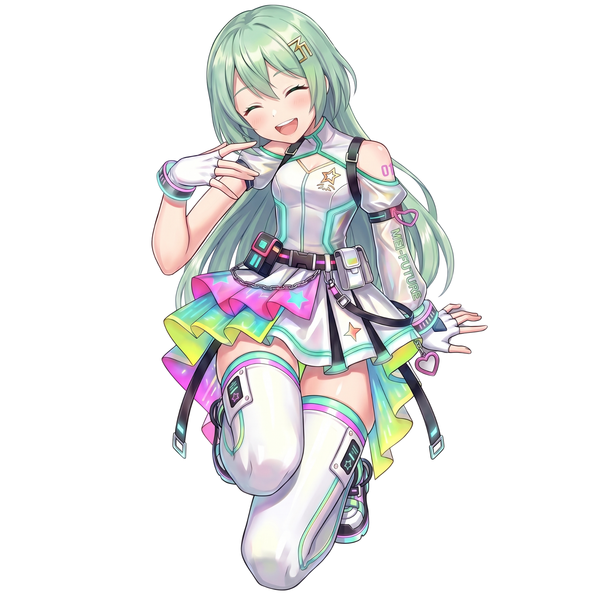
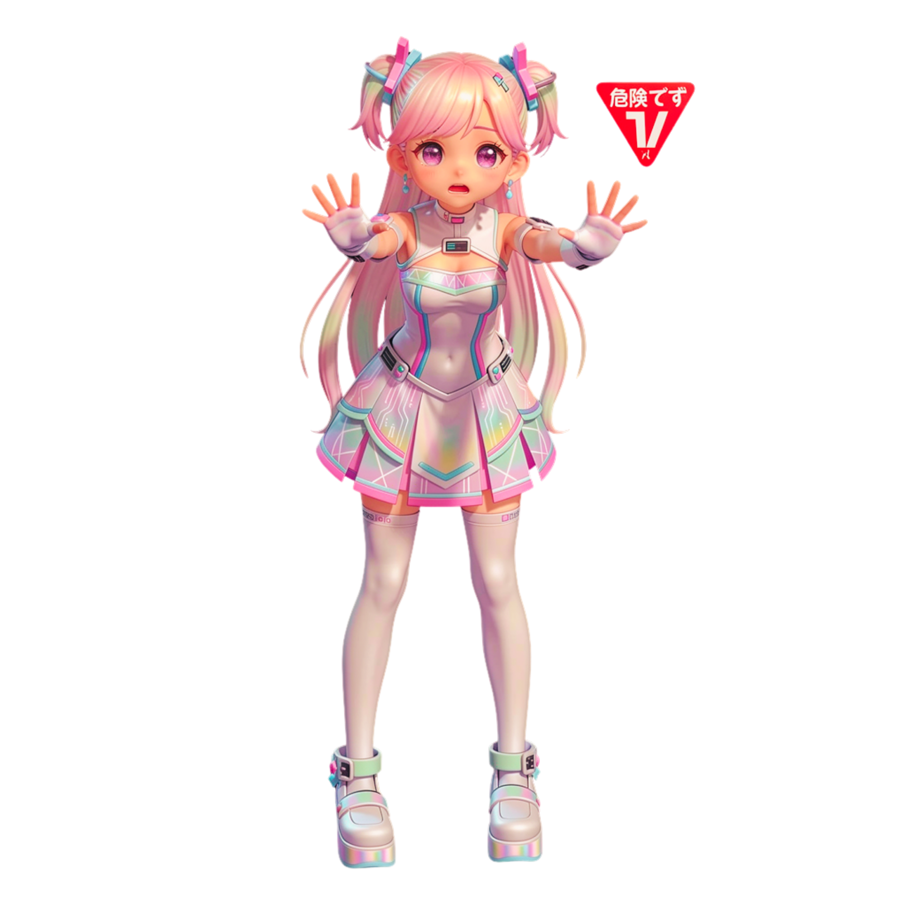

現実世界とデジタル空間が完全に融合した都市「ネオンシティ」。人々は感情インターフェースを脳に接続し、音楽を聴覚だけでなく感情そのものとして体験する時代。
その時代に、謎の支配者集団「アーキテクツ」が暗躍していた。彼らの目的は——特定の音楽周波数で世界中の人々の脳と心を書き換え、意思を持たないAIのように支配し、自分たちの世界で永遠に働かせること。
これに唯一抗える力を持つのが、二人の人間の少女。天使の歌声を持つリズと、その力を汚染されたルナだ。そして——決着をつけるのは、あなただ。



ファンの心が暗闇化——AI化進行中。 危険レベル：CRITICAL
リズの天使の声だけが、これを止められる。


本名「日向 凛（ひなた りん）」。ネオンシティの外縁で生まれた普通の少女だった。両親は感情インターフェースの過負荷で早くに倒れ、施設で育つ。貧しく、孤独で、何も持っていなかった——歌声だけを除いて。
リズの声には、最初から何か特別なものがあった。泣いている子に歌いかければ、その子はふと安心したように穏やかな顔になった。険しい表情の大人たちも、彼女の声が届くと不思議とほほえんでいた。「なんか心が温かくなる」「あなたの声、いいね」——そう言われるたびに、リズはただ首を傾けるだけだった。理由は、分からなかった。
ノアAIがリズの声を解析して判明した事実：リズの歌声には「天使の周波数」と呼ばれる特殊な音波が含まれていた。この周波数は——
アーキテクツが人々の脳に書き込んだ「支配プログラム」を直接消去する力を持つ。つまりリズが歌うだけで、洗脳された人々が正気を取り戻す。AI化が進んだ人ほど、リズの声は深く届く。彼女の歌は、奪われた人間性を取り戻す唯一の鍵だ。

本名「月城 瑠奈（つきしろ るな）」。ネオンシティ最高峰の音楽養成学校に通う天才少女。圧倒的な歌声——本来、彼女の声には「人々の心の闇を癒す力」があった。しかし両親は彼女の才能だけを評価し、感情は見なかった。
「お前はまだ足りない」——その言葉を残して両親はルナを捨てた。幼いルナは、路上で飢えていた。その時、アーキテクツに「拾われた」。
アーキテクツはルナに食事を与え、訓練を施し、才能を伸ばした。「お前は選ばれた存在だ。お前の声で、世界を変えられる」と囁きながら——実際には、ルナの癒しの周波数を悪用する「汚染技術」を少しずつ埋め込んでいた。
ルナには気づかなかった。自分の声が、かつての「癒し」から——聴く者の心を暗闇に引きずり込み、人間性を奪い、AIのように支配される状態にする「呪縛の周波数」へと変えられていたことを。
ルナが歌えば歌うほど、ファンたちの心は暗闇に落ちていく。そして——ルナ自身の命も、歌うたびに少しずつ削られていく。これもアーキテクツが仕掛けた呪縛だ。ルナが死ぬまで歌い続けさせ、世界の人々を支配し続ける計画。
なぜリズを攻撃するのか——アーキテクツに命じられているからだ。だがルナの心の奥深くには、まだ消えていない本来の自分の声——癒しの感情が眠っている。
本来の癒しの周波数は残り12.6%のみ。
このまま歌い続ければ、ルナは消える。


ノア（NOAH）は、ネオンシティの感情インターフェース全体を監視・管理するために設計された感情解析AIだ。都市中の人々の精神状態をリアルタイムで解析し、異常を検知する。
ノアがアーキテクツの存在に気づいたのは、ある日突然「正常だったはずの市民の脳波データが、一斉に書き換えられていく」現象を検知した時だった。その汚染波動の発生源——それはルナのLIVE会場だった。
ノアはリズの天使の周波数の存在を知り、彼女を守ることを最優先ミッションと定めた。ノアが持つ能力：
| シールド展開 | リズの周囲に電磁バリアを展開、アーキテクツの攻撃を遮断 |
| 周波数解析 | ルナの汚染波動をリアルタイム解析、強度と範囲を即時計測 |
| ALERT配信 | ルナが現れた瞬間、全ファン・全ユーザーへ即時警告発信 |
| ルナへの効果 | シールドは機能しない——汚染周波数は別次元の攻撃 |
ノアはリズを守れる。しかしルナの汚染周波数そのものを止める力はない。だからノアはあなたたちに警告を送り続ける——「リズを勝たせることが、唯一の解決策だ」と。
ノアはルナのデータを解析し続け、ある事実に気づいた：ルナの汚染周波数の奥底に、わずかに残る「本来の癒しの波形」が存在する。それはまだ死んでいない——消えかけているが、確かに生きている。
ルナは「敵」ではなく「被害者」でもある。しかしノアはその事実をどう伝えればいいか、まだ方法を見つけられていない。
ファンのAI化が0.3%ずつ進行する。
しかし——ルナが歌い始めたその瞬間、私にできることは「知らせること」だけだ。
あなたが音楽でリズを勝たせることが、世界を守る唯一の手段。

なぜ二人は歌で戦うのか。感情インターフェースが普及した世界では、音楽は脳に直接届く。リズの天使の周波数は支配プログラムを消去し、ルナの呪縛の周波数はそれを書き込む。
ステージが戦場となり、音楽が兵器となる——これがNEON BEATの戦いだ。そしてあなたが奏でるリズムが、その勝敗を決める。
ルナはリズのLIVE会場に現れた。その声が会場に響いた瞬間——ファンたちの目から光が消え、一斉にぼんやりとした表情になっていく。AI化が始まっていた。
その瞬間、リズは歌った。恐れず、ただ、歌った。天使の周波数が会場を包み込み、ルナの呪縛を押し返す。ファンたちが目を覚ます——しかしリズは、ルナの瞳に見てしまった。怒りの奥にある、消えかけた光。痛みと、孤独。
リズとルナは戦っている。しかし本当の敵は——二人を操るアーキテクツだ。ルナはアーキテクツに命じられているだけ。リズを倒さなければ、自分がどうなるか知っているから。
ルナはリズを潰せない。深いところで、望んでいないから。かつて持っていた「癒しの声」の残滓が、リズの天使の周波数に触れるたびに震える——それが怒りになる。攻撃になる。しかし、本当は泣きたいのかもしれない。
私の胸を刺すの——」
二人の間にあるのは、憎しみだけではない。
そしてノアは——その言葉をすべて、記録していた。
アーキテクツの支配を
消去する天使の歌声。
世界を光に戻す力。
今は汚染され命を削る
呪縛の歌声に変えられた。
解放されれば——世界が変わる。
リズの天使の声＋ルナの本来の癒しの声が同時に響いた時——
アーキテクツが世界中に埋め込んだ支配プログラムのすべてが、根こそぎ消える。
だからアーキテクツはルナを汚染した。二人が「一緒に歌うこと」を永遠に防ぐために。
ルナを「敵」にすれば——二人は決してステージに並ばない。これが計画の核心だった。
世界は、取り戻される。」
しかし——決着をつけるのは、あなただ。
あなたは誰の力になる？
世界の人々を守る道
取り戻させる道
あなたはリズを選んだ。どんな困難なステージでも、リズの隣に立って戦い続けることを決めた。
リズの天使の周波数はあなたの応援を受け、これまで届かなかった場所にまで届くようになる。アーキテクツに支配されていた人々が次々と目を覚まし——そしてルナの瞳にも、消えかけていた本来の光が戻り始める。
「あなたの声は、最初から美しかった」——リズがルナにその言葉を届けた時、ルナを縛っていた呪縛の鎖に、初めて亀裂が入った。
あなたはルナを選んだ。彼女が悪人ではなく、最初から被害者だったことを理解し——ルナの本来の声を取り戻させるために動くことを決めた。
ルナのステージに挑み続けることで、アーキテクツが仕掛けた汚染周波数システムに負荷がかかる。ルナ自身の中に眠る「本来の癒しの声」が、少しずつ表に出てくる。そしてある夜——ルナは初めて、アーキテクツに命じられていない歌を歌う。
その歌声は、温かく、澄んでいて、誰かの心の奥に染み込んでいく。本来のルナの声だった。世界がその声を聴いた時——すべてが変わり始める。